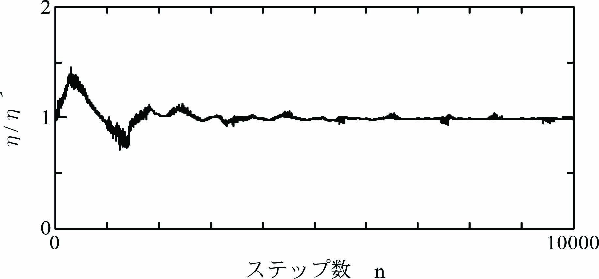
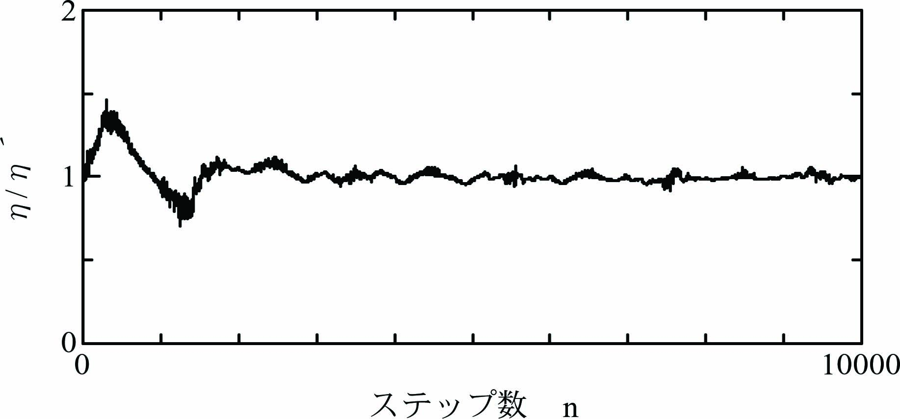
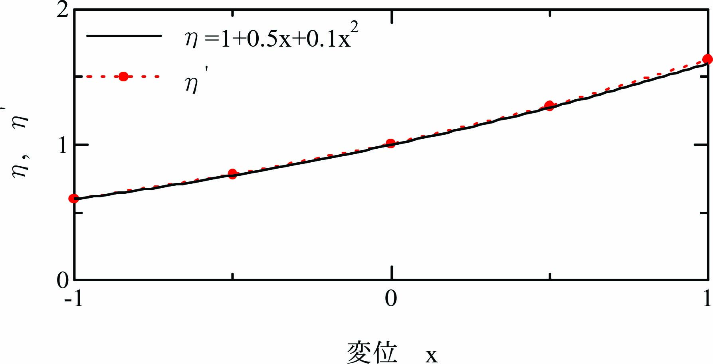

モデル規範適応制御の適応制御則には制御対象の状態ベクトル\(\mathbf{x}=[x~~\dot x]^T\)が必要ですが、 現実の制御対象では、観測できるのは制御対象からの出力\(y=x\)のみです。 そこで、ここでは\(\dot x\)を差分近似する手法を試み、モデル規範適応制御の動作を確認します。
超安定論によるモデル規範適応制御 を数値解析で確認します。
\begin{align} \ddot x + a\frac{\eta}{\hat\eta}\dot x + b\frac{\eta}{\hat\eta}(x - u) = 0 \label{eq:SysEqn} \end{align}ここに、\(x\)は位置、\(u\)は位置入力、\(\eta(>0)\)は駆動効率、\(\hat\eta\)は駆動効率\(\eta\)の推定値です。
目的とする制御性能を規範モデル規範モデルとして次式で与えます。
\begin{align} \ddot x_M + a\dot x_M + b(x_M - u)= 0 \label{eq:MdlEqn} \end{align}ここに、\(x_M\)は規範モデルの位置です。係数\(a=50.24\)、\(b=15775\)とします。
ここまでは、モデル規範適応制御の数値解析(時間微分の差分近似)と同じです。
まず、変位\(y\)の動作範囲を\(\pm d/2\)とし、長さ\(d\)を\(m\)の有限要素に分割します。 次に\(m+1\)個の有限要素の節に基底関数\(\phi_i(y)~~(i=0\cdots m)\)を配置します。
駆動効率\(\eta\)が変位\(y\)に応じて変化する場合、制御対象\eqref{eq:SysEqn}は非線形システムになります。 そこで、\(n\)個の基底関数\(\phi_i(y)\)を用いて駆動効率\(\eta\)を次式で表します。
\begin{align} \hat\eta(y) = \sum_{i=0}^m \hat w_i\phi_i(y) \label{eq:Func_eta} \end{align}式\eqref{eq:SysEqn}の\(\hat\eta\)を超安定論によるモデル規範適応制御 で導出した適応制御則に従って調整します。
適応制御則：
\begin{align} \left. \begin{array}{@{\,}rl} \dot{\hat{w}} &=~ -\alpha \frac{v_{FB}\varepsilon}{\hat\eta}\phi(y)\\ v_{FB} &=~-a \dot x - b (x - u)\\ \varepsilon &=~ e + c\dot e,\\ e &=~ x_M - x. \end{array} \right\} \label{eq:AdaptRule} \end{align}強誠実条件：
\begin{align} c > \frac{1}{a} \label{eq:STR_Cond} \end{align}制御対象\eqref{eq:SysEqn}をオイラー法による逐次数値積分 により数値計算します。
オイラー法の時間刻み\(\varDelta t = 0.0001\)[s]として計算します。\(x_0(n)=x(n)\)として
\begin{align} \left. \begin{array}{@{\,}rl} \ddot x_k(n)&=~ -a\frac{\eta}{\hat\eta} \dot x_k(n) - b\frac{\eta}{\hat\eta}\{x_k(n) - u(n)\},\\ \dot x_{k+1}(n)&=~ \dot x_k(n)+\ddot x_k(n)\varDelta t,\\ x_{k+1}(n)&=~ x_k(n) + \dot x_k(n)\varDelta t + \frac{1}{2}\ddot x_k(n)\varDelta t^2. \end{array} \label{eq:Euler} \right\} \end{align}規範モデル\eqref{eq:MdlEqn}はサンプル時間\(T=0.005\)[s]として、離散時間状態方程式 で計算します。
\begin{align} \left[ \begin{array}{@{\,}l} x_M(n+1)\\ \dot x_M(n+1) \end{array} \right] = \left[ \begin{array}{@{\,}cc} 0.82410.004137\\ -65.26&0.6163 \end{array} \right] \left[ \begin{array}{@{\,}l} x_M(n)\\ \dot x_M(n) \end{array} \right] + \left[ \begin{array}{@{\,}c} -0.1759\\ 65.26 \end{array} \right]u(n). \label{eq:StateEq} \end{align}離散時間状態方程式\eqref{eq:StateEq}を１回実行する間に式\eqref{eq:Euler}を\(T/\varDelta t=50\)回(\(k=0\cdots 49\))実行します。
現実の制御対象では出力\(y=x\)以外の状態量は計測できませんので、 ここでは\(\dot x\)を中央差分で近似します。
\begin{align} \dot x^\prime(n) = \frac{x(n+1)-x(n-1)}{2T} \label{eq:DiffX} \end{align}中央差分\eqref{eq:DiffX}で\(\dot x^\prime\)の現在値\(\dot x^\prime(n)\)の計算には未来値が必要です。 そこで、適応制御則\eqref{eq:AdaptRule}には\(x\)、\(\dot x\)、\(u\)には1ステップ過去値を採用し、 \(\dot{\hat\eta}(n)=\{\hat\eta(n)-\hat\eta(n-1)\}/T\)と近似して適応制御則\eqref{eq:AdaptRule}を次式とします。
\begin{align} \left. \begin{array}{@{\,}rl} \hat w(n+1)&=~\hat\eta(n)-\alpha T\frac{v_{FB}(n-1)\varepsilon(n-1)}{\hat\eta(n-1)}\\ v_{FB}(n)&=~-a \dot x^\prime(n) - b \{x(n) - u(n)\}\\ \varepsilon(n) &=~ e(n) + c\dot e(n) \end{array} \label{eq:AdaptRuleDgt} \right\} \end{align}数値実験では式\eqref{eq:Euler}～\eqref{eq:AdaptRuleDgt}を１ステップとします。
初期値\(\hat{\eta} = 1\)として、 \(\eta = 1.0+0.5x+0.1x^2\)の場合について\(\eta/\hat\eta\)の挙動を数値実験により観察します。
  モデル規範適応制御 と同様に適応制御により制御対象\eqref{eq:SysEqn}が規範モデル\eqref{eq:MdlEqn}に一致することを確認できます。